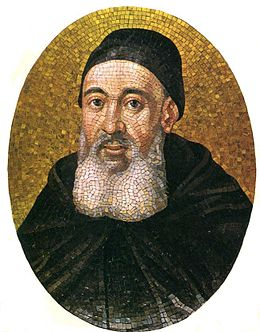
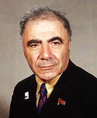

Հայ հնադարյան աստղագիտություն։ Բյուրականի աստղադիտարան: Վ. Համբարձումյանի կյանքն ու գործունեությունը՝
Հայկական աստղագիտություն
Հայկական աստղագիտություն, ըստ պատմական ու հնագիտական տվյալների՝ մ. թ. ա I հազարամյակի կեսերից Հայկական լեռնաշխարհում օգտվել են լուսնային, ապա՝ արեգակնային օրացույցից։ Դեռ վաղ միջնադարում հայերեն են թարգմանվել հույն գիտնականների աստղագիտական բնույթի աշխատություններ, իսկ մոլորակների հայկական անվանումները (Փայլածու, Լուսաստղ կամ Լուսաբեր, Հրատ, Լուսնթագ, Երևակ) գրեթե ճշգրտորեն համընկնում են դրանց հին հունական (մինչև մ. թ. ա. VI-IV դարերում գործածված) իմաստային անվանումներին։
Աստղագիտության ձևավորումը Հայաստանում
Աստղագիտությունը՝ որպես գիտություն, Հայաստանում ձևավորվել է VII դարերում՝ Անանիա Շիրակացու տիեզերագիտական ու տոմարագիտական աշխատություններով։ Շիրակացին ընդունել է Երկրի գնդաձևությունը, ճիշտ բացատրել Արեգակի և Լուսնի խավարումները, Ծիր կաթինին վերագրել է աստղային բնույթ։ Աստղագիտության և տոմարագիտության հարցերը XI դարերում լրջորեն քննարկել է Հովհաննես Սարկավագը «Պատճեն տոմարի» աշխատության մեջ, որտեղ տվել է տոմարագիտության հարցերի լրիվ շարադրանքը և հայկական օրացույցը համեմատել այլ ժողովուրդների օրացույցների հետ։ Միջին դարերում Հայաստանի վանական բարձրագույն դպրոցներում (Գլաձոր, Տաթև) դասավանդվել են «Տիեզերագիտություն» և «Տոմարագիտություն» առարկաները։
Մխիթարյանների ներդրումը
Աստղագիտական գիտելիքների տարածման գործում զգալի ներդրում են ունեցել Սուրբ Ղազար կղզու (Գենետիկ) Մխիթարյան միաբանության հրատները։ Մասնավորապես, Մխիթար Սեբաստացու «Բառգիրք հայկագեան լեզուի» (1749) գրքում, որպես ներդիր, զետեղվել է «Աստղալից երկինք» հայկական առաջին աստղագիտական տպագիր քարտեզը։ XIX դարի կեսերին Սուրբ Ղազարում Մխիթարյանները հիմնադրել են աստղադիտարան, որտեղ 17 սմ տրամագծով աստղադիտակով կատարվել են դիտումներ։ Այդ դիտումների և դրանց հետազոտությունների արդյունքները, նաև աստղագիտական բնույթի այլ հոդվածներ տեղ են գտել Մխիթարյանների՝ 1843 թ.-ից հրատարակվող Բազմավեպ հանդեսում։

Վիկտոր Համբարձումյան
Վիկտոր ՀամազասպիՎիկտոր (սեպտեմբերի 5 (18), 1908[1], Թիֆլիս, Թիֆլիսի նահանգ, Ռուսական կայսրություն - օգոստոսի 12, 1996[1][2][3][…], Բյուրական, Հայաստան[4]), հայ աստղագետ և աստղաֆիզիկոս, տեսական աստղաֆիզիկայի հիմնադիրներից մեկը։ Համբարձումյանի աշխատությունները վերաբերում են աստղերի և միգամածությունների ֆիզիկայի, արտագալակտիկական աստղագիտության, աստղային համակարգերի դինամիկայի, աստղերի և գալակտիկաների տիեզերածնության և մաթեմատիկական ֆիզիկայի, միջուկային ֆիզիկայի[12] բնագավառներին։ Սկզբունքորեն նոր տիեզերածնական հայեցակարգի հեղինակ է։ Ստալինյան մրցանակի կրկնակի (1946, 1950) դափնեկիր, Սոցիալիստական աշխատանքի կրկնակի հերոս (1968, 1978), Հայաստանի ազգային հերոս (1996), Ռուսաստանի Դաշնության պետական մրցանակի դափնեկիր, արժանացել է բազմաթիվ ակադեմիական պարգևների։ Բյուրականի աստղադիտարանի հիմնադիրն է[13][14]։

Կենսագրություն
Վիկտոր Համբարձումյանը ծնվել է Թիֆլիսում, 1908 թվականի սեպտեմբերի 18-ին։ Հայրը՝ Համազասպ Համբարձումյանը եղել է իրավաբան, գրականագետ։ Նկատելով երեք-չորս տարեկան որդու՝ թվերի նկատմամբ ունեցած մեծ հետաքրքրությունը, հայրն ավելի լրջորեն է զբաղվում օժտված զավակով՝ զարգացնելով նրա բնատուր բնագիտական ձիրքը[15]։ Դպրոցական տարիներին առավել ցայտուն են դրսևորվում մաթեմատիկայի և աստղագիտության նկատմամբ նրա հակումները։ Այդ տարիներին արդեն հրապարակային դասախոսություններ է կարդում ֆիզիկայի և աստղագիտության խնդիրների վերաբերյալ։ 1924 թվականի մարտին 15-ամյա Համբարձումյանը Երևանի պետական համալսարանում անվանի պրոֆեսորների, դասախոսների ուսանողների և աշակերտների համար դասախոսություն է կարդում Ալբերտ Էյնշտեյնի հարաբերականության տեսության վերաբերյալ, որն ընդունվում է մեծ հետաքրքրությամբ[15]։ Մի քանի ամիս անց նույն դասախոսությունը կրկնում է Թիֆլիսում[15]։
1924 թվականին Վիկտորն ընդունվում է Լենինգրադի մանկավարժական ինստիտուտի ֆիզիկա-մաթեմատիկական բաժինը։ Մեկ տարի անց տեղափոխվում է Լենինգրադի պետական համալսարան։ 1926 թվականին, տակավին ուսանող, նա հրատարակում է իր առաջին գիտական հոդվածը՝ նվիրված արեգակնային ջահերին։ Ուսանողական տարիներին տպագրում է ավելի քան 15 հոդված։ Համալսարանն ավարտելուց հետո, 1928-1931 թվականներին Վ.Համբարձումյանն ուսանել է Պուլկովոյի աստղադիտարանի ասպիրանտուրայում՝ ակադեմիկոս Ա․ Բելոպորսկու ղեկավարությամբ։ 1934 թվականին Լենինգրադի համալսարանում չորս տարի աշխատելուց հետո, Համբարձումյանը հիմնադրում և ղեկավարում է ԽՍՀՄ առաջին աստղաֆիզիկայի ամբիոնը։
1935 թվականին Համբարձումյանին շնորհվում է ֆիզմաթ գիտությունների դոկտորի աստիճան՝ առանց ատենախոսության պաշտպանության, ինչը նրա գիտական մեծ հեղինակության և համաշխարհային համբավի և վաստակի արդյունքն էր։
Հուշաքար Վիկտոր Համբարձումյանի տան մոտ
1939 թվականին ընտրվում է ԽՍՀՄ ԳԱ թղթակից-անդամ, և նշանակվում համալսարանի պրոռեկտոր՝ գիտակազմակերպչական աշխատանքների գծով։ 1943 թվականին հիմնադրվում է Հայկական ԽՍՀ գիտությունների ակադեմիան, Վ. Համբարձումյանն ընտրվում է փոխնախագահ։ 1947 թվականից Երևանի համալսարանի պրոֆեսոր էր։ 1947 թվականին ընտրվում է Հայաստանի գիտությունների ակադեմիայի նախագահ՝ փոխարինելով Հովսեփ Օրբելուն։ Այդ պաշտոնում վերընտրվում է մինչև 1993 թվականին։
1947 թվականին հրատարակում է իր հայտնի աշխատանքը՝ «Աստղերի էվոլյուցիան և աստղաֆիզիկան», որում ապացուցում է, որ իր հայտնագործած աստղային համակարգերը՝ աստղասփյուռները, կազմված են միանման աստղերից, և դրանով է պայմանավորված նմանատիպ աստղերի բարձր խտությունը։ Համբարձումյանի ստացած արդյունքներով աստղասփյուռների տարիքը չէր կարող գերազանցել մի քանի տասնյակ միլիոն տարին։ Եզրակացվեց նաև, որ նույն աստղասփյուռի բոլոր աստղերը առաջացել են միասին։ Դրանով իսկ ապացուցվեց, որ մեր Գալակտիկայում աստղառաջացման պրոցեսը շարունակվում է, և ծեր աստղերի հետ միասին գոյություն ունեն նաև երիտասարդ աստղեր։ Այս աշխատանքի համար Վ.Համբարձումյանը 1950 թվականին արժանացավ պետական մրցանակի։
1948-1955 թվականներին եղել է Միջազգային աստղադիտական միության փոխնախագահ[16], 1961-1964 թվականներին՝ նախագահ[12], 1968-1972 թվականներին՝ Գիտական ընկերությունների միջազգային խորհրդի նախագահ։
1953 թվականին Վ. Համբարձումյանն ընտրվում ԽՍՀՄ ԳԱ ակադեմիկոս։
1966 թվականին Բյուրականի աստղադիտարանում կազմակերպվեց միջազգային աստղագիտական միության 29-րդ ժողովը, ինչը վկայում է Բյուրականի աստղադիտարանում իրականացվող հետազոտությունների կարևորության մասին։
Մինչև կյանքի վերջը Վ. Համբարձումյանը համոզված էր, որ մեր ժամանակներում նույնպես գալակտիկաներ են ծնվում։
Վ. Համբարձումյանը աշխարհի ավելի քան 30 ազգային ակադեմիաների և միջազգային կազմակերպությունների պատվավոր անդամ էր, իսկ 1958-61 թվականներին գլխավորել է միջազգային աստղագիտական ընկերությունը։ Նա երկու անգամ ընտրվել է Գիտական միությունների համաշխարհային խորհրդի նախագահ (1966-72 թվականներ)։
1993 թվականին դառնում է Հայաստանի գիտությունների ակադեմիայի պատվավոր նախագահ։
1994 թվականին արժանացել է Հայաստանի ազգային հերոսի կոչման։
Մահացել է 1996 թվականի օգոստոսի 12-ին Բյուրականում։ Թաղված է Բյուրականի աստղադիտարանի 2,6 մ աստղադիտակից ոչ հեռու՝ Համբարձումյանների ընտանեկան գերեզմանատանը։ Նրա առանձնատունն այժմ մեծ գիտնականի տուն-թանգարանն է, իսկ Բյուրականի աստղադիտարանը 1998 թվականից կրում է իր հիմնադրի անունը։

Վիկտոր Համբարձումյանի հայրն ու պապը